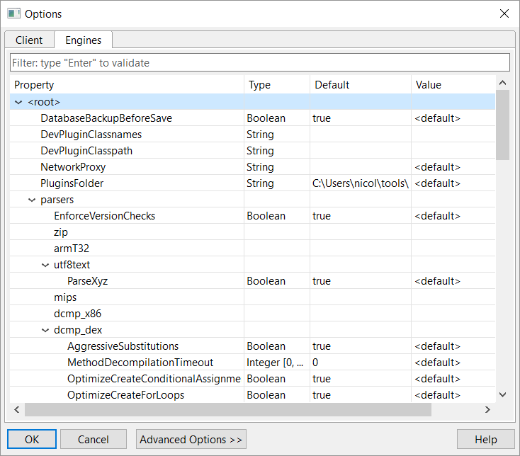

Engines Configuration¶
The RCP client stores the JEB engines configurations, also known as the back-end configuration, in the bin/jeb-engines.cfg. The cfg file is a key-value store where keys follow a dot-prefixed, dot-separated naming convention.
This file contains general back-end settings as well as the settings of common plugins shipped with most distributions of JEB. Each plugin has its own sub-namespace (.PluginType) within the .parsers namespace.
)
{kind=link}
Many settings are self-explanatory. This section will detail only those settings requiring additional details.
General¶
.DatabaseBackupBeforeSave¶
Since the persistence of each unit in a project is ultimately decided by the plugin responsible for that unit, errors in plugin code may generate JDB2 database corruption. When this option is true, the current JDB2 database is always backed up before attempting to save and overwite it. It is highly recommended to leave this setting on its default value (true).
.NetworkProxy¶
Similar to the similarly named client option. This setting holds proxy settings for the back-end. They must be set when third-party clients are used.
.parsers.EnforceVersionChecks¶
Determine if the minimum and maximum JEB version requirements specified in plugins is enforced by JEB. For instance, a plugin specifying a minimum JEB version of 2.2.1 will be rejected by JEB if its version is less than 2.2.1. It is recommended to leave this option as true.
.project.ArtifactProcessingDepth¶
TODO
.project.CompressPersistedProject¶
Determine if the JDB2 database should be compressed before being persisted to disk.
Android APK Plugin¶
.parsers.apk.FrameworksDirectory¶
TODO
.parsers.apk.ParseBytecode¶
TODO
.parsers.apk.TryMergeMultiDex¶
TODO
Android DEX Plugin¶
.parsers.dex.VerifyVersion¶
TODO
.parsers.dex.VerifyHashes¶
TODO
.parsers.dex.VerifyAccessFlags¶
TODO
.parsers.dex.ParseExtendedOpcodes¶
TODO
.parsers.dex.ParseOptimizedOpcodes¶
TODO
.parsers.dex.asm.ShowAddresses¶
TODO
.parsers.dex.asm.ShowBytecode¶
TODO
.parsers.dex.asm.ClassSeparator¶
TODO
.parsers.dex.asm.MethodSeparator¶
TODO
.parsers.dex.asm.ShowAnnotations¶
TODO
.parsers.dex.asm.ShowDebugDirectives¶
TODO
.parsers.dex.asm.ShowLineNumbers¶
TODO
.parsers.dex.asm.UsePForParameters¶
TODO
.parsers.dex.asm.BlankLinesAfterBlocks¶
TODO
.parsers.dex.asm.SmaliCompatibility¶
TODO
.parsers.dex.WellKnownLibraryPackages¶
TODO
android
android_src
com.google
java
javax
org.acra
org.json
org.apache
DEX Decompiler Plugin¶
The following settings are used to customize the decompilation process.
.parsers.dcmp_dex.ParseExceptionBlocks¶
Self-explanatory.
.parsers.dcmp_dex.ParseDebugInformation¶
Parse the debug information of the DEX file to extract and use metadata such as method parameter names.
Note: metadata can be forged and should not be trusted.
.parsers.dcmp_dex.AggressiveSubstitutions¶
Allow aggressive function substitutions during the IR optimization pass.
.parsers.dcmp_dex.OptimizeStringConcatenation¶
Rebuild string concatenation out of from string builders (eg, "foo" + "bar") when possible.
.parsers.dcmp_dex.OptimizeInlineSyntheticAccessCalls¶
Attempt to inline compiler-generated (synthetic) access calls (eg, when accessing inner class attributes from outer classes) when possible.
.parsers.dcmp_dex.OptimizeCreateForLoops¶
Rebuild for-loops from while-loops when possible.
.parsers.dcmp_dex.OptimizeCreateVarArgs¶
Rebuild variable argument calls when possible.
.parsers.dcmp_dex.OptimizeCreateMultiDimArrays¶
Rebuild multi-dimensional arrays when possible.
.parsers.dcmp_dex.OptimizeCreateConditionalAssignments¶
Rebuild tertiary (?:) assignments when possible.
.parsers.dcmp_dex.GenerateNumbersInHex¶
TODO
.parsers.dcmp_dex.PortDebugParameterNames¶
TODO
.parsers.dcmp_dex.DisplayPrivateMethodsLast¶
TODO
.parsers.dcmp_dex.InsertBlankLinesAfterCompounds¶
TODO
.parsers.dcmp_dex.GenerateSyntheticFields¶
TODO
.parsers.dcmp_dex.GenerateSyntheticMethods¶
TODO
.parsers.dcmp_dex.GenerateAnnotations¶
TODO
.parsers.dcmp_dex.java.DisplayPrivateMethodsLast¶
TODO
.parsers.dcmp_dex.java.GenerateAnnotations¶
TODO
.parsers.dcmp_dex.java.GenerateNumbersInHex¶
TODO
.parsers.dcmp_dex.java.GenerateSyntheticFields¶
TODO
.parsers.dcmp_dex.java.GenerateSyntheticMethods¶
TODO
.parsers.dcmp_dex.java.InsertBlankLinesAfterCompounds¶
TODO
.parsers.dcmp_dex.java.PortDebugParameterNames¶
TODO
XML Plugin¶
.parsers.xml.ParseComments¶
Parse and display XML comments (inside <!-- ... --> tags). Enabled by default.
Android Debugger Plugin¶
.parsers.dbug_apk.AttachPortRangeSize¶
TODO
.parsers.dbug_apk.AttachPortRangeStart¶
TODO
.parsers.dbug_apk.BlockingQueryTimeoutSeconds¶
TODO
.parsers.dbug_apk.PreferredGdbserverVersion¶
TODO
.parsers.dbug_apk.UseNativeDebugger¶
TODO
.parsers.dbug_apk.NativeAttachPortRangeSize¶
TODO
.parsers.dbug_apk.NativeAttachPortRangeStart¶
TODO
Project-specific Options¶
The engines configuration acts as a template for your projects' settings. Once within a project, an additional tab named Project-Specific allows the user to modify the back-end settings of the project only, without changing the global back-end settings.
{kind=link}